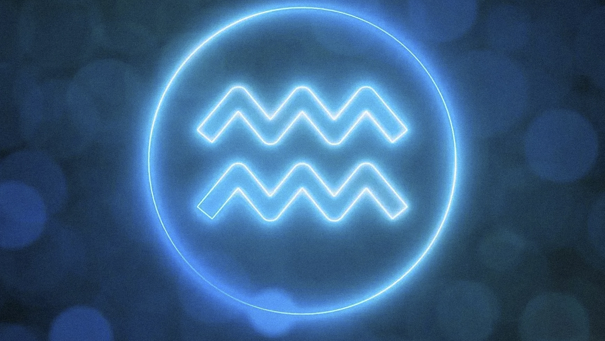

Acuario es el signo que representa lo nuevo, el futuro, la innovación, la creatividad, la genialidad, los chispazos de enlightment que vienen del cielo como una gran lamparita que se enciende en nuestro interior. Es lo que nos hace estar hermanados y sentirnos parte de la gran familia galáctica y, a la vez, sabernos diferentes a todos y únicos, como nuestras huellas digitales.
Capricornio, entre otras cosas, representa el statu quo, el momento en que algo se iguala para todos y, en ese mismo instante, nos agrupa como en una gran masa social o cultural. Son los mandatos sociales que se han establecido en una determinada comuna, en un determinado tiempo, en una determinada realidad. Capricornio es lo que consideramos “normal” y Acuario es lo que consideramos “fuera de lo normal”.
Ahora bien, ¿qué pasa cuando Acuario se transforma en Capricornio? Es decir, cuando lo que antes era divergente o extraño pasa a ser la norma y la regla? Incluso cuando se legaliza y se le da forma a usos y costumbres que eran impensadas hace años atrás? Se ha llegado al punto en que ese viejo Acuario se ha transformado en el nuevo Capricornio, por lo que ahora el nuevo Acuario sería ser DIFERENTE a eso que se ha establecido.
Recuerdo hace muchos años estaba conversando con una amiga -acuariana- sobre un determinado tema que para mí, desde que yo la conocía, era de una determinada manera. Por esa época ese tema comenzó a estar más institucionalizado, y yo -realmente de manera natural- comencé a ver la situación de una manera muy diferente. Recuerdo que mi amiga me dijo al escuchar mi “nueva” opinión al respecto: “sos tan uraniana” (léase “sos alguien que se rige mucho por Urano, el Sr. Ministro de los confines acuarianos). Y sí… es que para mí, cuando tooooodo el mundo empieza a hacer algo que antes era de muy pocos, pues ya hay que mirar para otro lado.
A ver si me siguen en esta: yo tengo tres tatuajes en mi cuerpo. ¡Tatuajes que me hice hace 26 años atrás! En esa época hacerse un tatuaje era algo muuuuy acuariano. Pocas personas se atrevían y podías hacerlo solo en una determinada galería de la ciudad. Realmente era algo atípico. Pasado este tiempo podemos ver a todo el mundo tatuado. En las empresas, los jefes, los padres de los niños, los políticos… todos tatuados. ¿Quiere decir esto que tatuarse está bien? No. Sólo quiere decir que como sociedad aceptamos los tatuajes como algo “normal” que nos iguala. Tener tatuajes ha pasado a ser un status quo capricorniano. Pues bien, fíjense que esta uraniana que les habla ha comenzado a querer taparse esos tatuajes. Ya no me gustan, ya no me identifican. Para mí ser acuariana en este tema es no tener tatuajes. Es justamente ser diferente en este asunto. Por eso, no se trata de que Acuario es determinada situación o Capricornio es otra; sino que representan lo innovador y lo establecido consecuentemente. Por lo que cuando lo innovador se convierte en lo establecido, deja de ser innovador. Recordemos además que Mr. Saturno está por ingresar a tierras acuarianas para formalizar muchos asuntos nuevos que, en breve, pasarán a ser el nuevo status quo.
Entonces, ¿qué es ser Acuario? ¿Qué es ser Capricornio? ¿Quién se atreve a ser verdaderamente Acuario? ¿Quién se atreve a ir contra la corriente del mundo y ser diferente a lo que todos consideran como “normal”? ¿Quién se atreve a reconocer que the old Capricornio is the new Acuario?